Enterprise software
Cox Automotive
CRM UX scores rose 16.5 points in UX-Lite and 27% on average in BERT surveys—now above primary competitors.
Outcomes & evidence
- UX-Lite points
- +16.5
- Average BERT survey scores
- +27%
- Dealerships adopted AI Communications after UX implementation
- +900
- Dealerships surveyed
- 3,291
Survey research and in-person dealership visits informed product-stack recommendations and a new design system. Iterative CRM improvements supported reduced churn in core workflows.
As Principal Product Designer, I led CRM research and design, combining team leadership with hands-on interface and front-end work. These results relate to CRM and AI Communications improvements; future-platform concepts are labeled separately.
FUTURE PLATFORM
A connected dealership experience.
I led the design direction for a proposed connected dealership experience.

Brought performance, priorities, and cross-product activity into one shared view.

Connected scheduling across dealership departments in a shared calendar.

Grouped capabilities, availability, and activity so teams can understand the role of each agent.

Kept individual and group conversations within the dealership workspace.

Combined search, filters, and vehicle comparison to support inventory decisions.
These future-platform concepts bring customer context, sales, service, inventory, and AI assistance into a shared experience. Executive Summary establishes the visual direction across the platform.
CORE CRM
Rebuilding the customer record.
I led the CRM redesign and contributed to architecture and interface delivery. Across the CRM work: +16.5 UX-Lite points and +27% average BERT survey scores.

Combined customer context, active leads, appointments, and AI summaries in one record.
The CRM needed clearer workflows and stronger user satisfaction. I combined dealership research with iterative interface and design-system work, bringing customer information, AI summaries, leads, and appointments into a shared record. Across the CRM work, UX-Lite rose 16.5 points and BERT survey scores increased 27% on average, surpassing primary competitors. The improvements also supported reduced churn in core workflows.
Xtime Reskin
A modern interface. Familiar workflows.
I architected the new React front end and redesigned workflows while preserving existing capabilities.

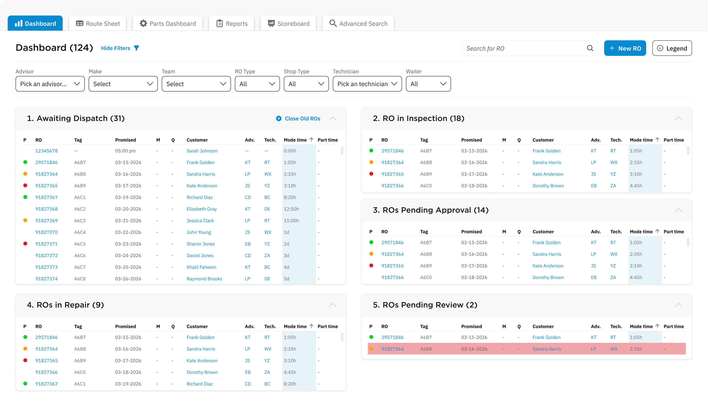
Grouped work by repair stage while preserving the operational structure teams already knew.

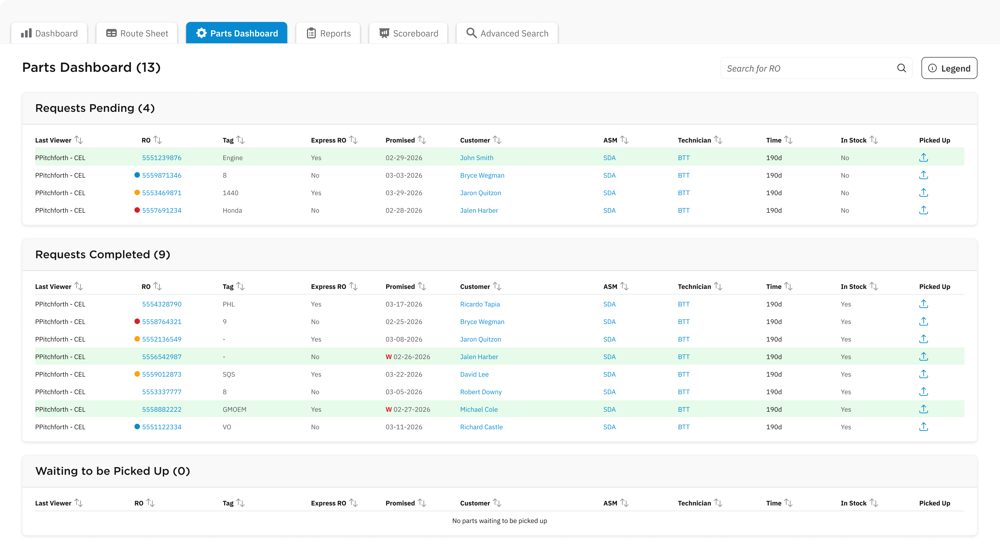
Separated pending, completed, and pickup work to make the next action easier to locate.

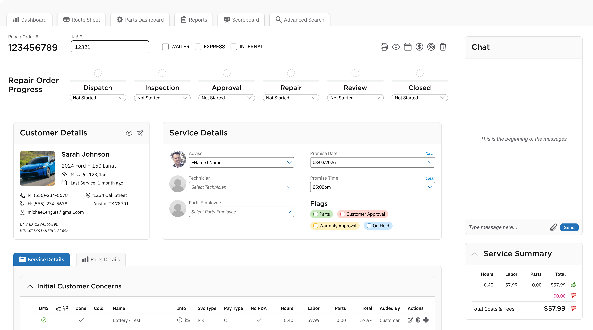
Brought customer context, assignments, and progress together without changing the underlying workflow.

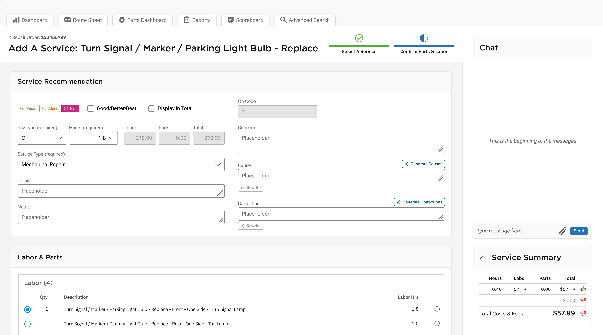
Organized service recommendations, documentation, parts, and labor within a familiar task flow.

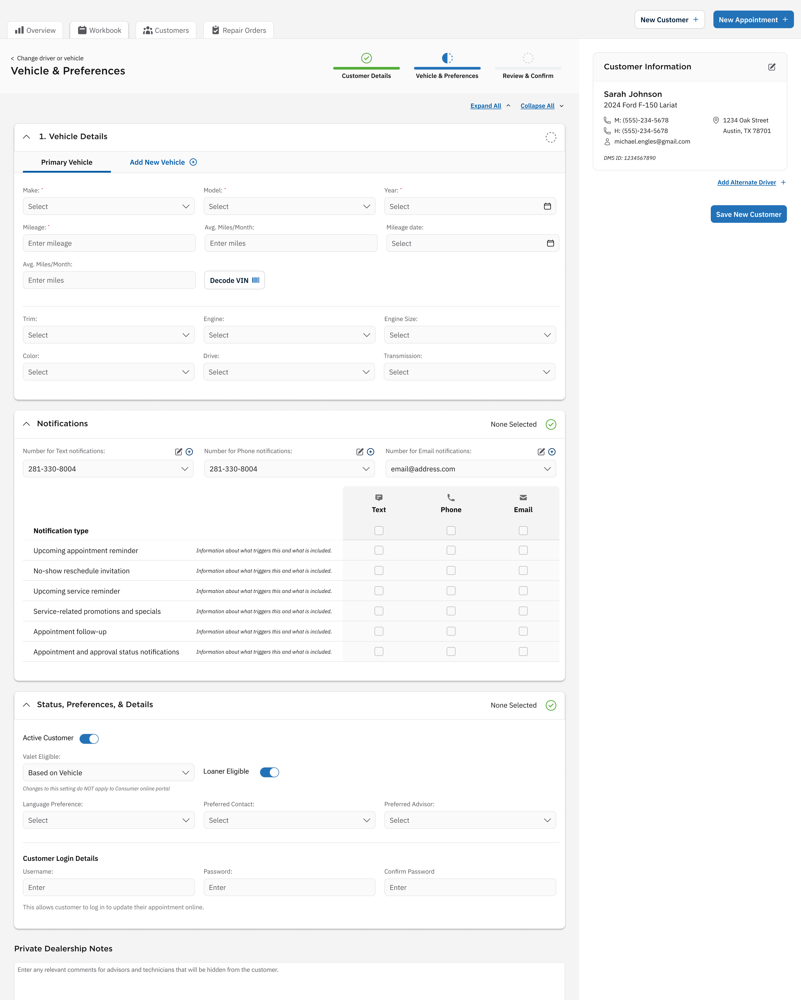
Used consistent sections for vehicle data, notifications, and customer preferences.

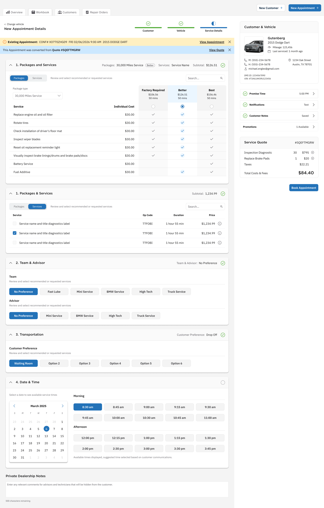
Kept service selection and scheduling in a guided sequence with customer context alongside it.
I architected a new React front end over Xtime’s existing legacy backend, creating a modern UI foundation without replacing the underlying systems. The redesign refreshed key screens across appointment scheduling, service, parts, and repair-order management.
With a tightly constrained budget, functional parity was essential. I planned the work around preserving existing capabilities and familiar screen structures, balancing visual improvements with continuity in everyday tasks. The goal was a clearer, more consistent interface that dealership teams could adopt easily, with minimal disruption to established workflows.
AIVin
Conversation backed by consistent experiences.
My design work connects open-ended conversation with reusable CRM interface components.

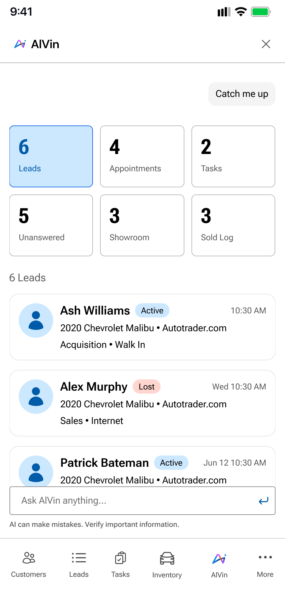
Paired summary tiles with reusable lead cards so a conversation can become structured work.

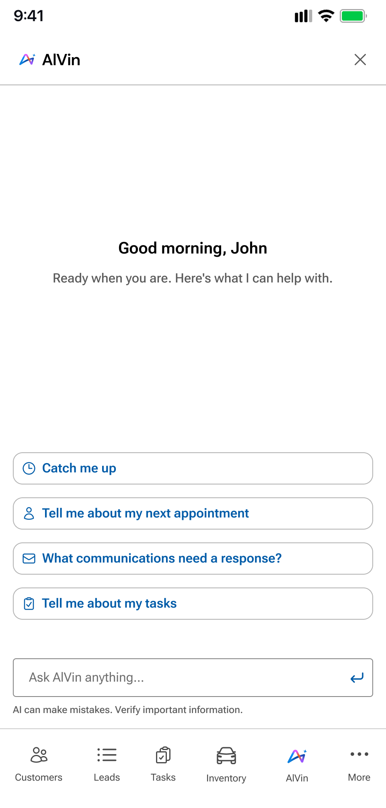
Made common starting points visible so users can begin with a task or an open-ended question.

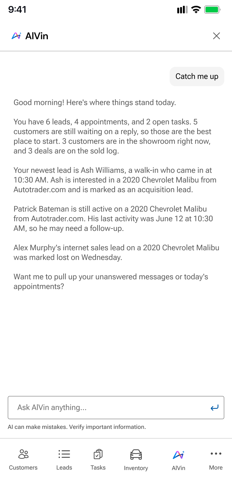
Used a conversational overview to highlight the day’s priorities and possible next steps.

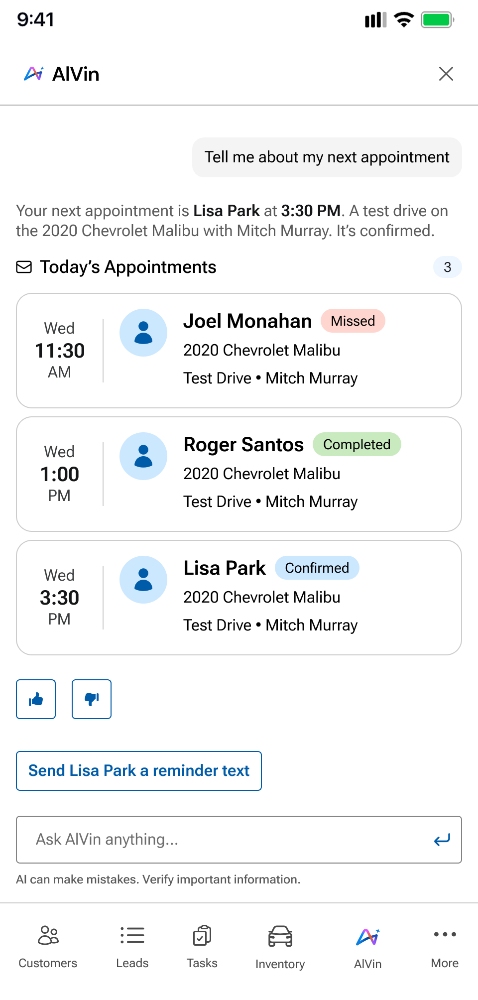
Combined appointment status and context with a relevant follow-up action.

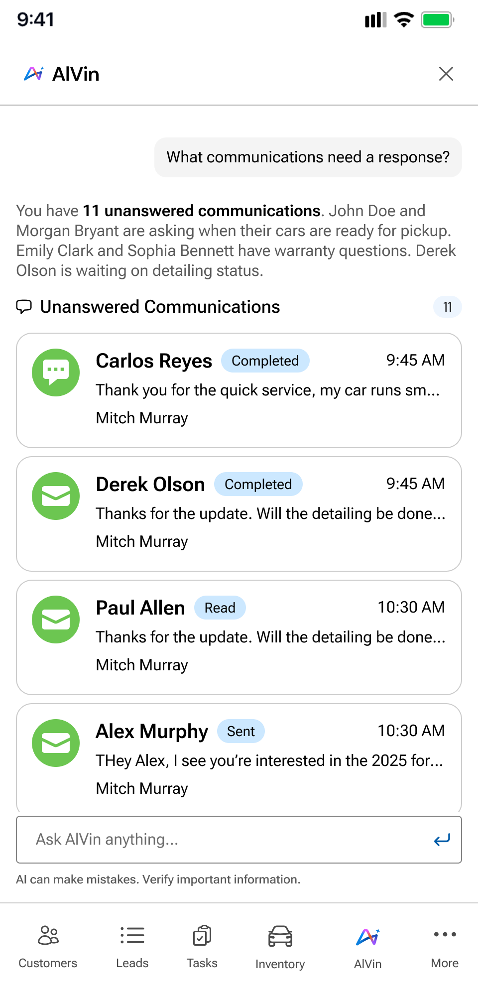
Used a consistent message list regardless of whether users arrive through a question, suggestion, or notification.
AIVin is an AI assistant that helps CRM users understand their workload and act on what needs attention across connected mobile and desktop experiences. It combines open-ended conversation with reusable interface components for leads, unanswered communications, appointments, and tasks.
Whether users ask a question, follow a suggestion, or respond to a notification, each type of content appears in a consistent, purpose-built format. Shared components bring familiar structure and actions into the conversation, helping users move from a summary to the work itself while maintaining continuity between the mobile app and desktop CRM.
SIDEBAR & MOBILE
Details in the flow of work.
I led experience design across the CRM and contributed directly to complex workflows.

Connected a natural-language request to structured vehicle results.

Kept vehicle information and actions close to the opportunity being worked.

Grouped valuation, ownership, and service context for a trade-in review.

Brought customer signals and interactions into one activity stream.

Supported collaboration with mentions and priority controls inside the lead workflow.
Focused sidebar and mobile experiences support AI queries, vehicle evaluation, lead activity, and team collaboration.
Generative AI
New capabilities inside a familiar application.
I designed the embedded Gen AI experience. After UX implementation, an additional 900 dealerships adopted the AI Communications platform.

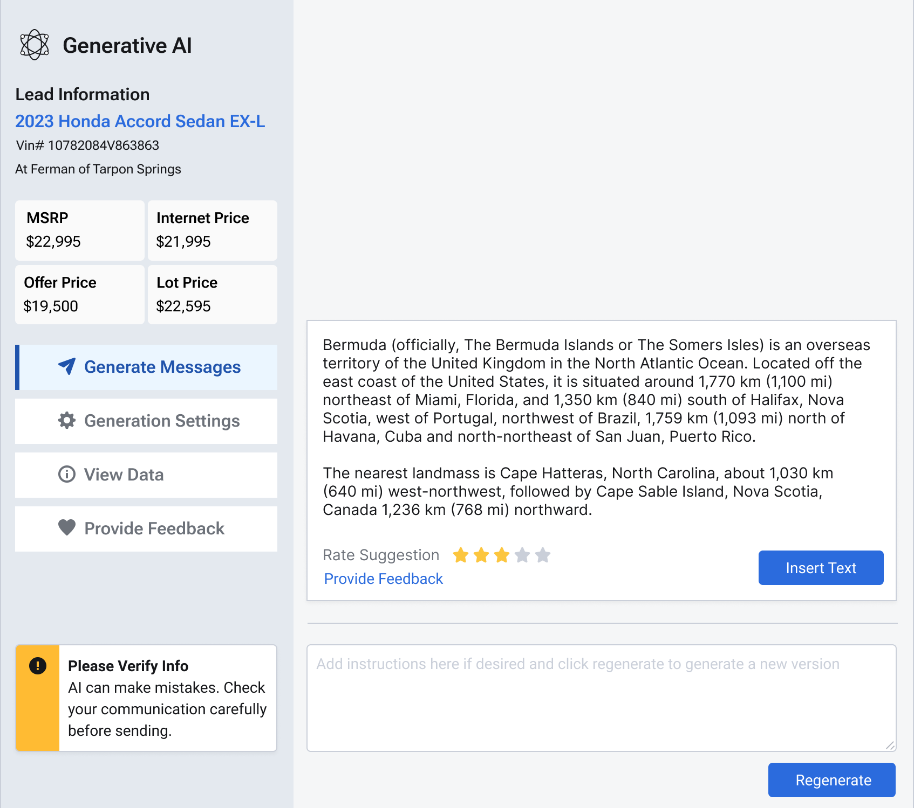
Placed generation, regeneration, feedback, and review inside the existing communication workflow.

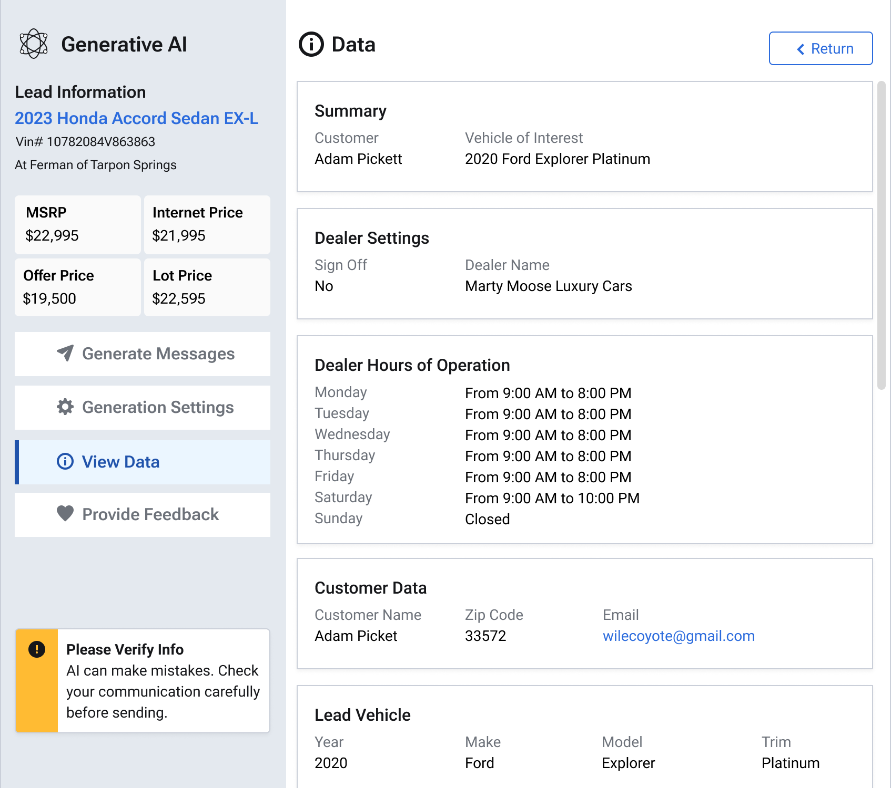
Made the customer, vehicle, and dealership context available alongside generated communications.

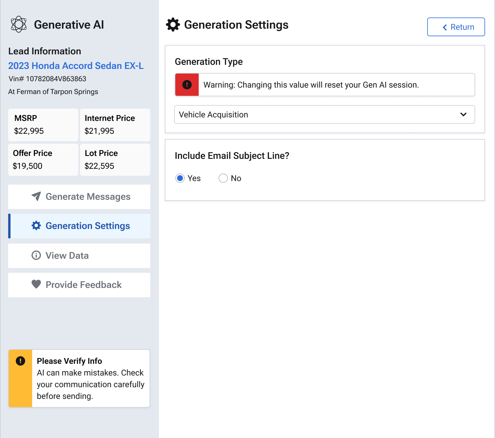
Exposed message controls within familiar interface patterns rather than requiring a host-application rebuild.
We embedded a communication and generative AI product directly into an existing dealership application. With no budget to fully re-architect the host, I designed the experience within its legacy design system, bringing new capabilities into the workflows teams already used.
The architecture balanced an ambitious product goal with practical constraints: retain the existing application, work within established interface patterns, and make AI-assisted communication accessible in context. After UX implementation, the AI Communications platform was adopted by an additional 900 dealerships. Embedding the experience in familiar workflows supported expanded adoption without requiring a rebuild of the host application.
PRINCIPAL PRODUCT DESIGNER · VINSOLUTIONS
Re-architecting the CRM.
Designing the role of AI.
I led designers and researchers through a fundamental CRM rebuild, pairing enterprise product direction with hands-on design and front-end work. The CRM product alone generates nearly $300 million in annual revenue. The previous CRM interface had gone nearly 15 years without a major refresh. I led research and design for its responsive replacement, with AI woven into the workflow.

- Dealerships surveyed
- 3,291
- Over 18 months
- Research reach
- Nationwide
- Across the United States
- CRM pages in scope
- Hundreds
- Architecture, UI, and responsiveness
- Planning horizon
- ~2 years
- Coordinating a complex transformation
RESEARCH TO PRODUCT
Evidence shaped the architecture.
I surveyed 3,291 dealerships to guide product-stack recommendations and conducted in-person dealership visits that directly informed design-system decisions. Combining UX-Lite, BERT survey testing, and field research, I prioritized and validated iterative CRM and platform improvements until scores surpassed primary competitors.
- 01
Listen
On-site research
Observed needs
Dealer workflows - 02
Frame
User journeys
Features + priorities
Heuristic analysis - 03
Explore
UI architecture
Testable alternatives
Design + code prototypes - 04
Validate
Iterative research
Evidence for decisions
Real user feedback - 05
Refine
Responsive pages
Implementation + learning
Reusable patterns
- Custom MUI theme
- Extensively adapted components
- Branded design system
- Responsive CRM pages
The system grew from a custom MUI / Material UI theme, extensively modified for the brand and the demands of dealership workflows.
Download diagram
UI + AI EXPERIENCE
Two ways in. One connected workflow.
My view: UI and AI work best together. Let people choose direct interaction or an AI-assisted path, according to what gets the task done most effectively.
Responsive CRM UI
Navigate, inspect, and act through clear interfaces.
Dealer AI assistant
Ask for KPIs, statistics, customer information, and help.
Customer context + dealership workflows
- Customers
- Opportunities
- Appointments
- Inventory
Help users compose
Generate communications for their customers.
Handle conversations
Converse independently with customers, including answering calls.
Information accuracy · Customer communications · Dealer risk
Accuracy and regulatory requirements shaped AI behavior and communication flows, alongside the goal of shorter, simpler workflows.
Download diagram
LEADING THE WORK
Lead the team. Take on the hard problems.
I assigned myself some of the most complex UI work while setting direction, coaching the team, and expanding how we designed, researched, and built with AI.
Set the course
- CRM experience architecture
- Designer + researcher leadership
- Direct dealership engagement
Do the work
- Personally tackle thorny workflows
- Design and code prototypes
- Contribute front-end development
Enable the team
- Coach Claude Code + Figma Make
- Create skills + Markdown guidance
- Connect the design system via MCP
- Research evidenceSynthesize what we learned
- Explore + challengePrototypes, heuristics, synthetic users
- Human validationTest with real dealership users
Design-system connections and AI workflows were developed within Cox Automotive’s security requirements.
Download diagram
How research grounded the AI workflow
We used existing research to guide synthesis and evaluate UI alternatives. Digital twins and synthetic users helped surface potential issues before on-site sessions; they were tools for exploration, not substitutes for evidence from real people. This let us use dealership research time more deliberately.